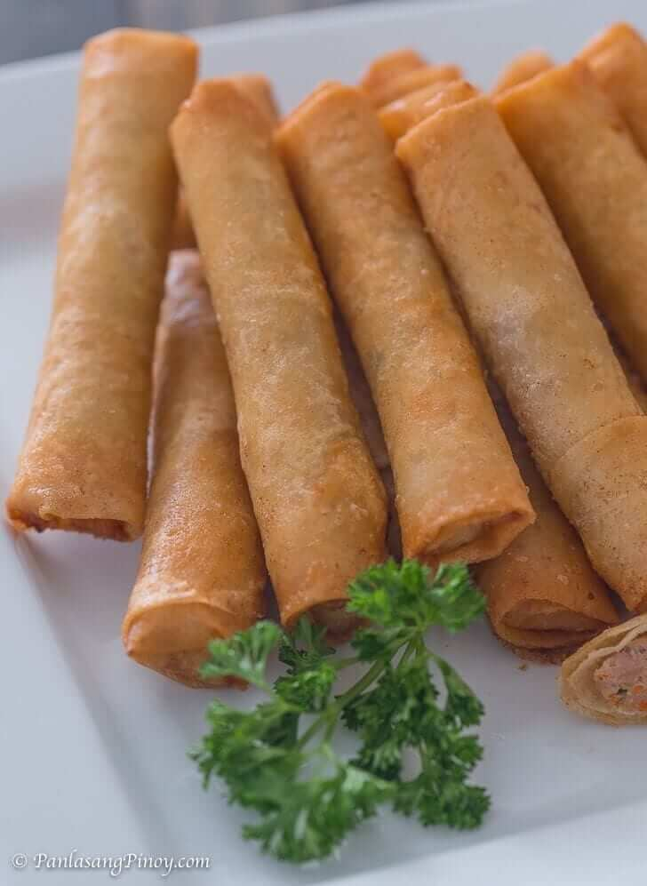

Shanghai Recipe

Description
Shanghai, often referring to Shanghai Lumpia or
Filipino Spring Rolls.These delicious and crispy
rolls are filled with seasoned mixture of ground pork,
vegetable and sometimes shrimp. The filling is wrapped
in thin pastry sheets and deep-fried until golden brown.
Ingredients
-
Ground Pork:1 pound(around 450 grams)
-
Carrots:1 cup, julienned or finely chopped
-
Onion:1 medium-sized, finely chopped
-
Garlic:3 cloves, minced
-
Green Onions:1/2 cup, finely chopped
-
Soy Sauce:2 tablespoon
-
Salt and Pepper:To taste
-
Lumpia or Spring Roll Wrappers:These are thin pastry
sheets available in Asian grocery stores. They are typically made of
flour, water, and salt.
-
Sesame Oil:1 teaspoon (Optional, for flavor)
Dipping Sauce(Optional):
-
Soy Sauce:1/4 cup
-
Vinegar:2 tablespoons
-
Garlic:1 clove, minced
-
Sugar:1 teaspoon
-
Red Pepper Flakes:A pinch(Optional, for heat)
Instructions:
-
Prepare the Filling:
In a large mixing bowl, combine ground pork, carrots, onion,
garlic, green onions, soy sauce, salt, pepper, and sesame oil.
Mic well until all ingredients are evenly distributed.
-
Wrap the Lumpia:
Lay out a lumpia wrapper, place a tablespoon of the filling
near one edge, and roll tightly. Seal the edge with a bit of water.
-
Heat the Oil:
Heat cooking oil in a deep pan or a fryer to 175-190 celsius.
-
Fry the Lumpia:
Carefully place the wrapped lumpia into the hot oil and fry until
golden brown and crispy. Make sure not to overcrowd the pan.
-
Drain Excess Oil:
Place the cooked lumpia on paper towels to drain excess oil.
-
Prepare the Dipping Sauce(Optional):
In a small bowl, mix soy sauce, vinegar, minced garlic, sugar, and
red pepper flakes(if using).
-
Serve:
Serve the Shanghai Lumpia hot with the dipping sauce on the side.